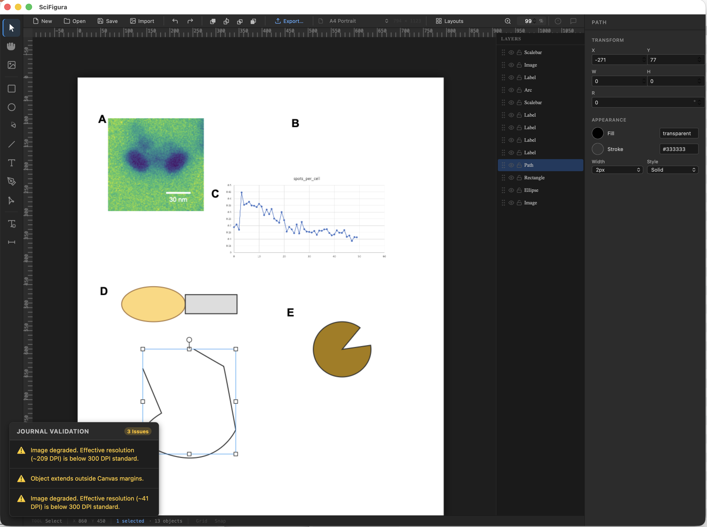

Publication-ready figures,
made effortless.
A free, open-source desktop application designed specifically for life science researchers. Build complex multi-panel layouts, enforce global styles, and switch journal formats with a single click.
